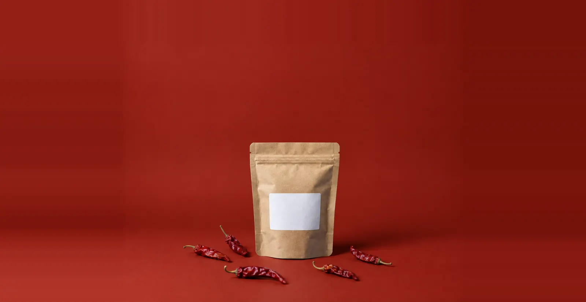
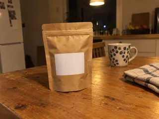
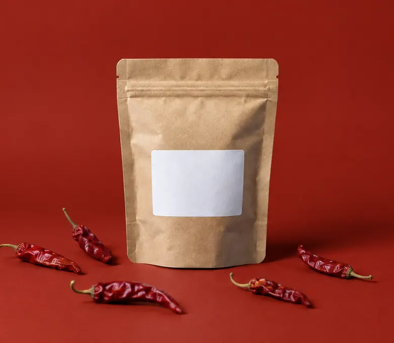

Satu studio, empat cara memakainya.
Rak gulungannya sama. Yang berbeda hanya apa yang kamu bawa masuk.

Studio foto dan video produk berbasis AI. Unggah foto atau tempel link produk, tarik latar yang cocok, lalu terima foto katalog dan video iklan 9:16 sekaligus.Studio foto dan video produk berbasis AI. Unggah foto atau tempel link produk, lalu terima foto katalog dan video iklan 9:16.
1 latar = 1 foto 4:5 = 2 kredit, Rp1.000 (angka contoh)

Masuk: satu foto HP seadanya. Keluar: enam latar dengan cahaya dan properti yang cocok, produknya tidak bergeser. Ruang Visual memotret ulang produkmu, bukan sekadar mengganti warna di belakangnya.
Affiliate cukup menempel link produk. Ruang Visual membaca nama dan foto utama dari halaman publik produk itu, lalu menulis pembuka dan menyusun video dengan voice over Bahasa Indonesia. Pakai hanya untuk produk yang kamu promosikan secara resmi, misalnya lewat program affiliate.
Pilih pembuka, 3 dari 10 variasi:
Kalau link belum terbaca, kolomnya langsung berubah jadi tempat unggah foto, tanpa menghapus isianmu.
Bayar sesuai pemakaian, tanpa langganan bulanan. Makin besar isinya, makin tebal gulungannya.
Rp25.000
50 kredit
Sekitar 25 foto atau 2 video 8 detik
Rp50.000
100 kredit
Sekitar 50 foto atau 5 video 8 detik
Rp100.000
210 kredit
Sekitar 100 foto atau 10 video 8 detik
Rp250.000
550 kredit
Sekitar 270 foto atau 27 video 8 detik
Semua nominal dan kredit di atas adalah angka contoh untuk konsep, belum harga resmi. Bayar lewat QRIS, e-wallet, atau virtual account.
Hanya untuk produk yang kamu jual sendiri atau kamu promosikan secara resmi, misalnya lewat program affiliate. Ruang Visual membaca nama dan foto utama dari halaman publik produk itu, dan tanggung jawab hak pakai fotonya tetap ada padamu. Kalau ragu, unggah foto produkmu sendiri.
Boleh untuk produk yang kamu jual atau promosikan secara resmi. Rincian hak pakai komersial akan ditulis di Syarat Layanan sebelum peluncuran.
Persona UGC dibuat fiktif dan tidak boleh menyerupai orang nyata. Unggahan berisi wajah orang lain tanpa izin ditolak, dan setiap video berisi orang atau suara AI membawa pengingat label konten AI.
Belum diputuskan. Kalau ada, jumlahnya akan ditulis langsung di bawah tombol di halaman ini, bukan dijanjikan di tempat lain.
Dokumen konsep: Gulung Latar
Di bawah garis ini bukan bagian situs. Konsep final, 3 Oktober 2026.Ruang Visual adalah dinding studio foto produk: tarik satu gulungan kertas latar, dan produkmu langsung dipotret ulang di latar itu, lengkap dengan foto katalog dan video iklan 9:16. Rasa merek: terampil, hangat, cekatan. "Ruang" dibaca harfiah sebagai ruang studio yang terang dan rapi; "Visual" diwujudkan sebagai benda yang terasa bisa dipegang.
Rak gulungan kertas latar selebar layar. Batang besi membentang dari tepi kiri ke tepi kanan layar. Enam gulungan bernama bahan dapur (Telang, Pandan, Kunyit, Cabai Kering, Gula Aren, Arang Batok) berjajar di batang itu. Gulungan aktif menipis dan lidah kertasnya turun menyambung ke panggung. Tarik atau ketuk gulungan lain: kertas baru terbentang dari atas, lalu produk yang sama muncul dipotret ulang dengan properti sewarna. Kontrol yang sama menjadi pemilih latar di aplikasi.
Momen kedua: Kertas Sambung. Satu gulungan panjang yang digeser ke samping. Di setiap sambungan warna kertas berganti, produknya tidak bergeser. Ini menggantikan grid "satu produk, enam latar" dari ronde 1.
Kenapa orisinal: referensi (Krea, Higgsfield, Pika, Ideogram, Leonardo) dan pesaing (Vidiolab, Kling) memamerkan hasil jadi di atas latar gelap atau ungu. Tidak ada yang memamerkan alat kerja fotografer produk, padahal kertas latar dikenal siapa pun yang pernah memotret dagangan di rumah.
Antarmuka selalu hitam-putih; warna hanya hidup di kertas dan foto. Semua rasio dihitung dengan rumus luminans WCAG 2.x.
Keterangan kecil ("Contoh hasil AI", "Foto 4:5", chip video) selalu duduk di pelat Putih Studio dengan teks Lensa, 17,56:1. Judul dan subjudul hero memakai warna per gulungan. Angka di bawah adalah rasio terendah dari semua piksel di belakang baris teks, diukur dari render Chromium 1440x900 dan 390x844 (teks disembunyikan, latar dipotret, lalu dihitung per piksel):
| Gulungan | Warna teks | H1 terendah, desktop / ponsel | Subjudul terendah, desktop / ponsel |
|---|---|---|---|
| Cabai Kering (pembuka) | Putih Studio | 7,53 / 8,91 | 7,79 / 8,91 |
| Telang | Putih Studio | 4,80 / 5,88 | 5,08 / 5,88 |
| Pandan | Putih Studio | 4,75 / 5,47 | 5,11 / 5,47 |
| Kunyit | Lensa | 5,50 / 6,72 | 6,40 / 6,87 |
| Gula Aren | Putih Studio | 7,88 / 9,57 | 8,23 / 9,57 |
| Arang Batok | Putih Studio | 9,98 / 14,26 | 11,81 / 14,26 |
| Referensi | Diambil | Diubah |
|---|---|---|
| krea.ai | Beranda adalah alat yang bisa dipakai | Alatnya benda fisik (rak gulungan) yang bisa dicoba tanpa login, terang, bukan sidebar daftar model. |
| higgsfield.ai | Video tampil langsung, fitur per kebutuhan | Satu kartu video 9:16 berdiri di set yang sama dengan foto; fitur ditulis per kebutuhan dengan biaya Rupiah. Tanpa neon dan banner promo. |
| pika.art | Foto besar sebagai pusat hero | Still life produk fiktif yang latarnya bisa ditarik, bukan potret orang; serif gemuk, bukan caps sans. |
| ideogram.ai | Hasil AI sebagai hero, judul serif | Young Serif gemuk; foto diganti pengunjung lewat rak; deret logo diganti metode bayar lokal. |
| leonardo.ai | Merek berani lewat satu gestur besar | Gesturnya benda (batang dan gulungan selebar layar), bukan tipografi melengkung; enam bumbu, bukan ungu. |
| Catatan juri | Perubahan |
|---|---|
| A: grid "satu produk, enam latar" adalah etalase standar | Diganti Kertas Sambung: gulungan panjang yang digeser, produk tidak bergerak, sambungan awal tepat di produk. |
| A: rak selebar layar, teks keluar dari kolom kiri | Batang besi tepi ke tepi, panggung full-bleed, H1 melebar di atas produk. Hero atas-bawah. |
| A dan portofolio: jangan buka dengan Kunyit | Ronde 2: default Telang. Ronde 3: diganti Cabai Kering (amandemen portofolio). Kunyit urutan ketiga, digeser ke #E8930C (1,51:1 terhadap kuning Dokurapi). |
| A: ganti Plus Jakarta Sans | Tetap, karena PORTFOLIO.md menguncinya untuk Ruang Visual dan merek lain memilih font berdasarkan daftar itu. Dibatasi ke teks maksimal 20px; suara merek seluruhnya Young Serif. |
| A: satu bahasa gerak, radius 4-6px | Semua reveal terbentang dari atas, fade-up dihapus; tombol 6px, pelat 4px. |
| B: keterangan di atas warna gagal AA | Semua keterangan di pelat putih, teks Lensa 17,56:1; teks hero diukur dari piksel render (tabel di bagian Palet). |
| B: H1 ponsel baru di 550px; strategi muat gambar | H1 ponsel di sekitar 152px; hanya foto aktif dimuat awal, sisanya saat rak disentuh atau Kertas Sambung mendekat. |
| C: video tenggelam, affiliate dan kreator kurang terlayani | Kartu video 9:16 di hero, H1 menyebut foto dan video, field link berbobot setara, section link ke video, section empat cara memakai studio. |
| C (dipinjam dari arah C) | Rupiah di setiap kredit, title "Foto Produk AI dan Video Iklan AI", halaman pintu masuk, pengingat label konten AI, link gagal jadi kotak unggah, video tanpa autoplay di ponsel. |
| Portofolio: merah blok, biru tinta, cap, nama token | Cabai Kering #8F2216 (1,48:1 terhadap merah Dokurapi), Telang hue 222, tanpa cap, token Putih Studio, Lensa, Abu Lantai, Abu Bayang, Garis Rak. |
| Catatan | Perubahan |
|---|---|
| A1 dan amandemen: buka hero dengan Cabai Kering | Preload, gambar panggung, alt, gulungan aktif, dan skrip memakai Cabai Kering. Telang tetap di rak dan tetap sambungan pertama Kertas Sambung. Tidak ada lagi bidang biru besar di hero. |
| A2: meja kerja jadi benda studio | Dua klem jepit hitam di tepi atas kartu, radius 3px, bayangan kontak ke kanan bawah searah cahaya produk. |
| A3 dan amandemen: section bawah tidak memakai kerangka generik | Saldo jadi empat ujung gulungan di rak; empat cara jadi gulungan menggantung; judul Kertas Sambung jadi pelat berjepit; grid kartu bertepi dan kolom fakta dihapus. |
| B1: label swatch "Garis Rak" 3,97:1 | Nama dan hex semua swatch pindah ke bawah, di atas putih, teks Lensa 17,56:1. |
| B2: fokus logo footer tidak terlihat | Cincin fokus putih di footer Lensa (17,56:1), diuji dengan Tab. |
| C1: tombol memakai nama latar | "Buat foto dan video" + keterangan "Latar aktif: Cabai Kering (merah)" yang ikut berganti; nama gulungan aktif tampil di ponsel. |
| C2: "Coba gratis" belum pasti | Tombol navigasi jadi "Mulai"; tanya jawab menjelaskan kredit coba belum diputuskan. |
| C3: hak pakai foto dari link | Copy jadi "membaca nama dan foto utama dari halaman publik produk itu. Pakai hanya untuk produk yang kamu promosikan secara resmi"; pertanyaan hak pakai masuk tanya jawab. |
| C4: label angka contoh | Biaya video, biaya per latar, dan semua nominal saldo berlabel angka contoh di tempatnya. |
| Amandemen: garis putus-putus milik Dokurapi | Garis zona aman di pemutar video jadi garis utuh tipis. |
| Opsional B: margin kontras dan animasi | Pita atas foto Pandan desktop digelapkan 5% (subjudul naik dari 4,59 ke 5,11:1); animasi kartu video berhenti saat di luar layar. |
Menunggu keputusan Syauqi. Tidak ditampilkan di mockup di atas, dan halaman tidak menjanjikan apa pun yang gratis.
Masalah yang dicatat Juri C: tanpa kredit coba, pengunjung harus isi saldo dulu sebelum melihat satu hasil dari produknya sendiri. Desain di bawah menyiapkan jalurnya; mana yang dipakai adalah keputusan harga, bukan keputusan desain.

Sampai ada keputusan, copy di mockup tetap tanpa kata gratis, dan tombol navigasi tetap "Mulai".
| Catatan | Perubahan |
|---|---|
| A: klem meja terbaca gembok atau tas | Klem digambar ulang sebagai klem kertas: badan hitam dengan dua kawat logam terbuka ke samping. Satu simbol dipakai di meja, pelat judul, formulir video, dan tali pembuka. |
| A: panggung hero meminjam rupa alat foto produk AI | Kartu video kini terpasang di ring light bertripod yang berdiri di lantai kertas cabai: lampu studio sebagai benda, bukan kartu melayang. Inline SVG, tanpa gambar tambahan. |
| A: section video masih formulir standar | Section dibangun ulang di atas kertas Gula Aren yang turun dari rak; ponsel di tripod; pembuka dijepit di tali; formulir dijepit; grid 2x2 keterangan dan daftar radio dihapus. |
| B: tombol di bawah lipatan pada 360x640 | Di layar ponsel pendek, meja kerja naik ke atas foto produk; tombol di y 482 pada 360x640. |
| C: jalan keluar saat link gagal tidak terlihat | Kalimat cadangan dikembalikan di bawah tombol "Buat video dari link". |
| C: konversi tanpa coba gratis | Bukan diputuskan desainer. Jalur pratinjau disiapkan di atas dengan label "menunggu keputusan"; mockup tidak menjanjikan gratis. |
| Juri | R1 | R2 | R3 | R4 |
|---|---|---|---|---|
| Juri A, keunikan | 85 | 86 | 91 | 93 |
| Juri B, craft | 83 | 94 | 95 | 96 |
| Juri C, pasar | 81 | 86 | 88 | 89 |
Rata-rata ronde 4: 92,7. Target 95 per juri. Craft lolos; keunikan 93 karena inti panggung hero masih berbagi rupa dengan alat foto produk AI; pasar 89 (92 bila keputusan coba gratis diambil, juri menyarankan pratinjau 1 foto bertanda air).
Diuji di Chromium dengan emulasi ukuran layar 360 sampai 1440 px, belum di HP sungguhan.